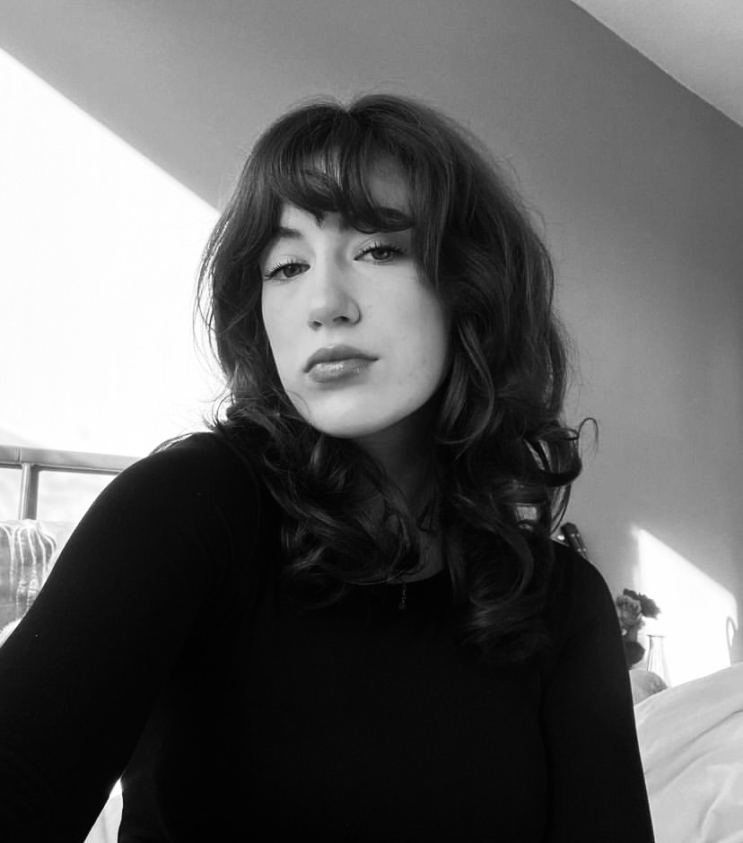
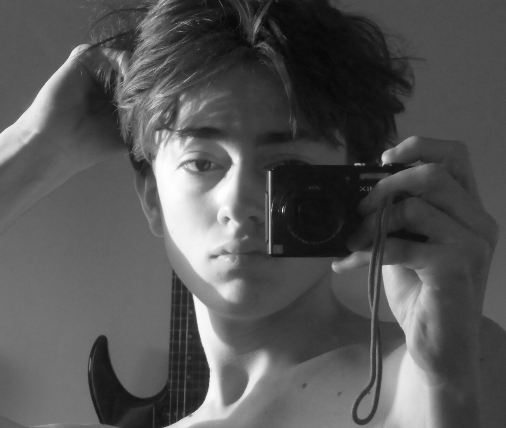

Over ons
Uw hosts zijn drie studenten die een podcast hebben gemaakt voor een schoolopdracht over True Crime. Een onderwerp die ons heel erg interesseert en wij ook graag naar luisteren of kijken. Door het vele kijken en ook luisteren van True Crime verhalen zijn wij geïnspireerd geraakt om hierover onze podcast te doen.
Lois Brandsen
Hi! Ik ben Lois en ik ben 20 jaar oud en doe de opleiding Communication Multimedia en Design. Als groepsopdracht hebben wij gekozen om onze podcast te houden over True Crime. Zelf kijk ik heel veel True Crime documantaires en vind ik de podcast vna Dionne SLagter super leuk om naar te luisteren. Er zijn veel True Crime verhalen dus genoeg te vertellen!
Emma Boonstra
Hoi! Ik ben Emma en ik ben 20 jaar oud. Ik doe de opleiding Communicatie en multimedia Design aan de HVA. Wij hebben true crime gekozen als onderwerp van onze podcast omdat we dit een leuk en intressant onderwerp vinden. Zelf luister ik al heel lang naar ture crime, en dan vooral die van Dionne Slagter. Ik hoop dat wij het op dezelfde respectvolle manier kunnen gaan vertellen zodat het fijn te luisteren is!

Job Vastenhout
Hoi, ik ben Job! Ik ben 19 jaar oud. Ik doe de opleiding Communication & Multimedia Design aan de HvA. Wij maken onze podcast over True Crime, want wie houdt er nou niet van een spannend en meeslepend verhaal? Zelf ben ik nog niet enorm bekend op dit onderwerp dus luister en leer mee terwijl ons team je vertelt over deze spannende waargebeurde verhalen.
